Format Conversion
VASP/CP2K/ABACUS/LAMMPS/CIF 与 extxyz/POSCAR 等互转。
离子电导、DOAS、NEB、描述符、极化分析等。
能量/力范围、最短距离、过滤、组分分析、离群点排查。
训练、预测、输运、热力学、结构统计全套图形输出。

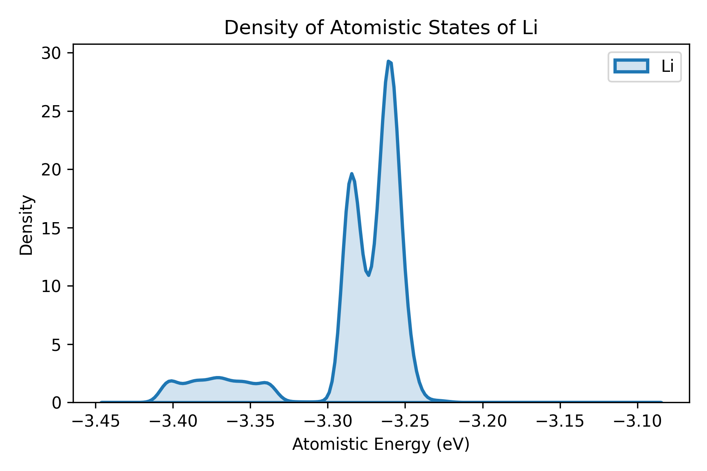
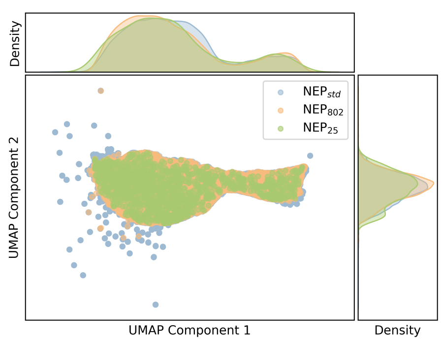
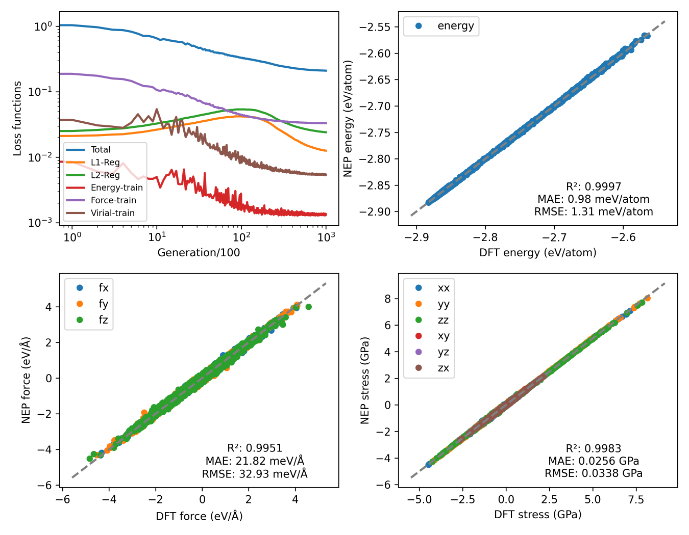
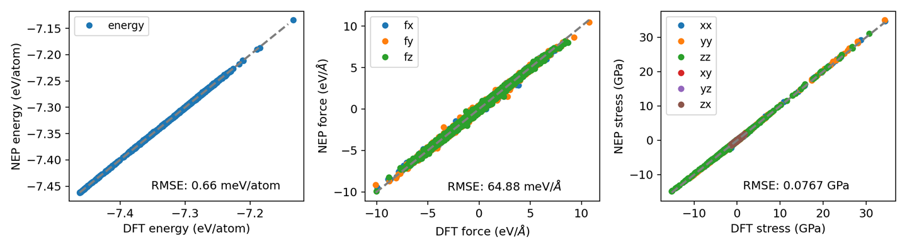
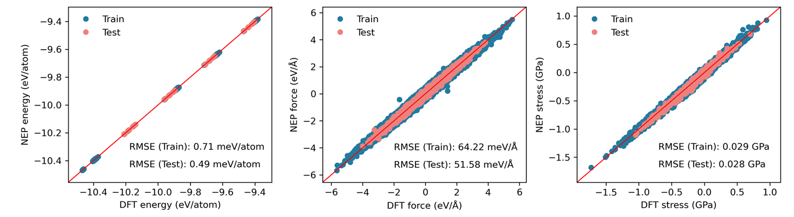

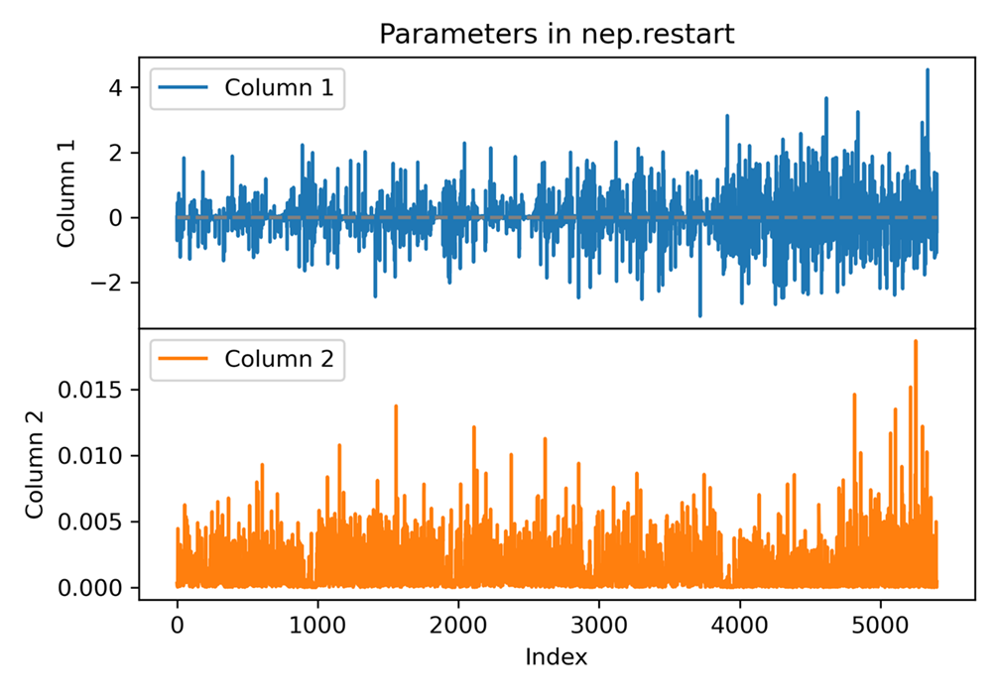
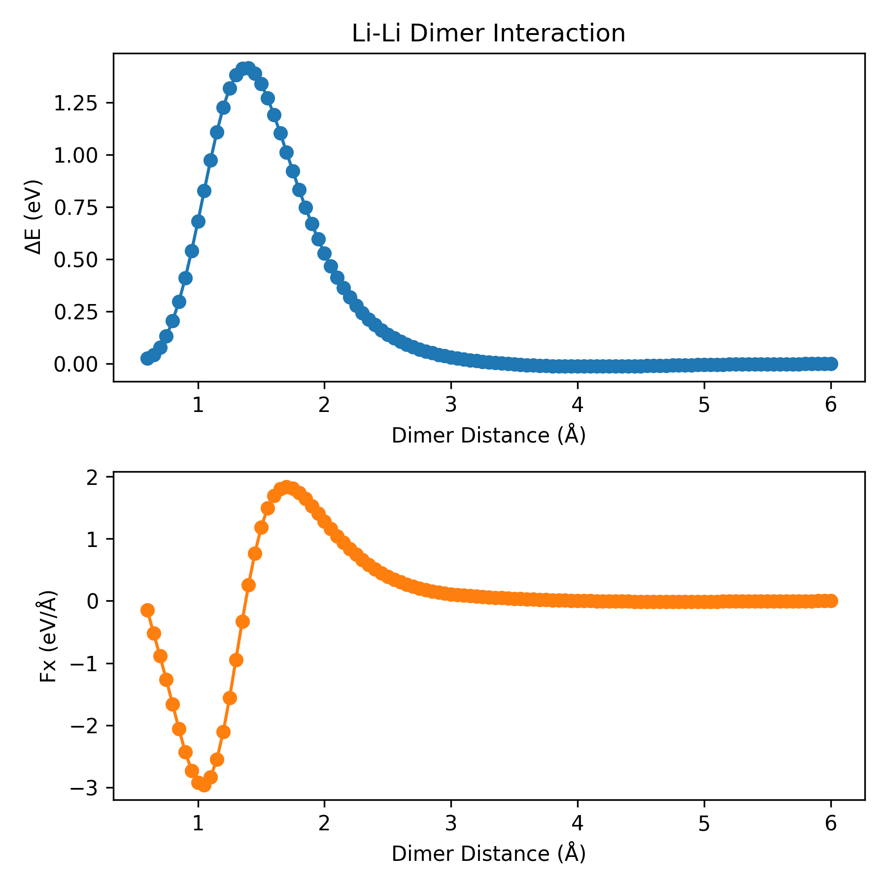
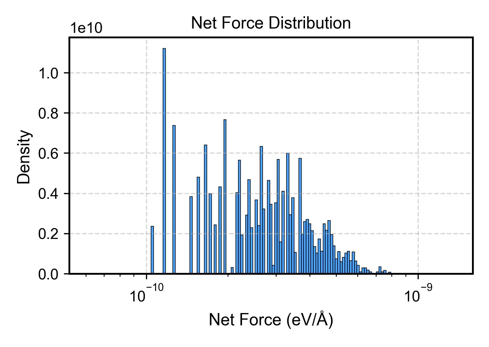
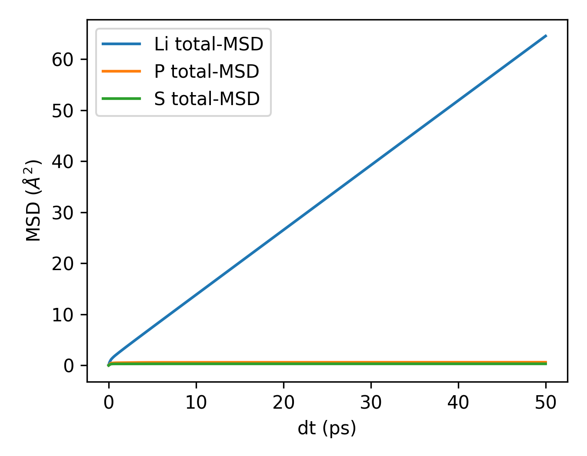
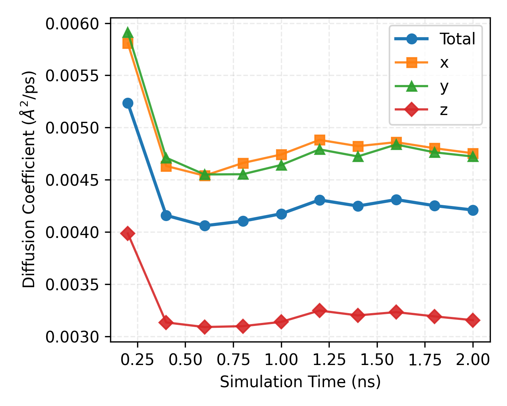
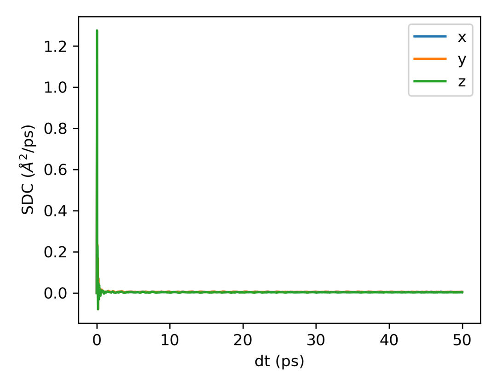
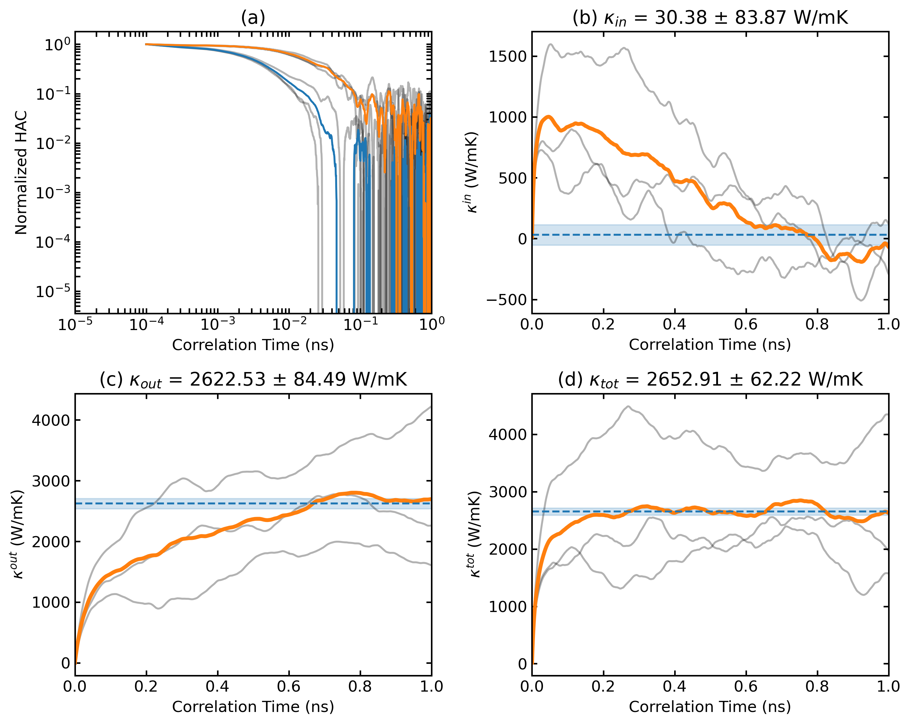

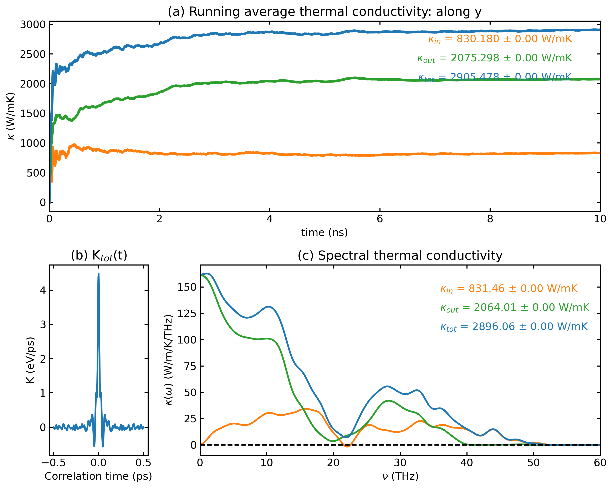

-calc nlist / disp / avg-struct / oct-tilt / pol-abo3-plt plane-grid
ABO3 体系局域位移、八面体倾斜、极化向量统计与层内矢量可视化。


文档来源：docs/tutorials/*.md 与 Scripts/*/README.md
仓库：zhyan0603/GPUMDkit
操作：←/→ 或 ↑/↓ 翻页；滚轮翻页；按 O 或点左上角打开目录。